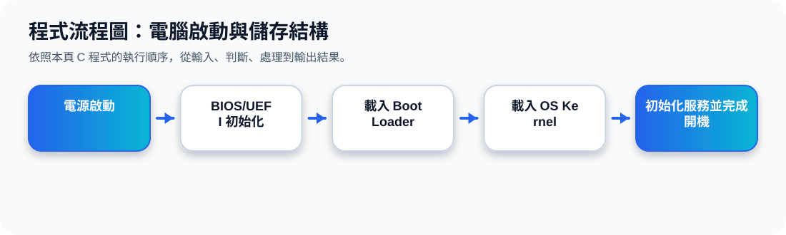

二、Computer Startup：電腦如何開機？
Bootstrap Program 當電腦開機或重新啟動時，系統會先執行存在 ROM 或 EPROM 中的 bootstrap program，也就是韌體 firmware。它的工作是初始化系統，並把作業系統核心載入記憶體。
開機流程動畫
可以把 bootstrap 想成「啟動作業系統的小幫手」。電腦剛開機時還沒有完整 OS，所以需要 firmware 先把 OS 載入。
三、Storage Structure：主記憶體與次級儲存
Main Memory 主記憶體
CPU 可以直接存取的主要儲存區，速度快，但通常是 volatile，也就是斷電後資料會消失。程式要執行時，指令與資料通常必須先進入主記憶體。
Secondary Storage 次級儲存
提供大量且 nonvolatile 的儲存空間，例如硬碟與 SSD。它的資料斷電後仍可保存，但 CPU 通常不能像存取暫存器或主記憶體一樣直接使用它。
Magnetic Disk 與 Solid-State Disk
磁碟使用磁性表面儲存資料，資料會被組織成 tracks 與 sectors；SSD 沒有機械移動部件，速度通常更快，也越來越普遍。
四、Storage-Device Hierarchy：儲存裝置階層
儲存階層可以用金字塔理解：越上層越靠近 CPU，速度越快、容量越小、成本越高；越下層容量越大、成本越低，但速度較慢。
越上層
速度快、容量小、成本高、通常更接近 CPU。適合放正在運算或很常使用的資料。
越下層
速度慢、容量大、成本低，適合長期保存大量資料，例如備份與檔案儲存。
五、本主題快速整理
投影片 7–9 的重點可以用一句話記住：電腦開機時由 bootstrap program 載入作業系統；程式執行時需要主記憶體；長期保存資料需要次級儲存；而不同儲存裝置依照速度、容量、成本形成階層。
程式流程圖與流程講解
程式流程圖：電腦啟動與儲存結構

流程講解
可編輯 C 程式範例與線上編輯器
可編輯 C 程式：電腦啟動與儲存結構
這段程式依照上方流程圖設計，包含中文註解，適合貼到線上編輯器直接執行與修改。
程式題目完整教學內容
程式題目完整教學：電腦啟動與儲存結構
一、程式題目講解
用陣列與迴圈呈現電腦從開機到核心與系統服務啟動的順序。
重點是 Booting 流程與字串陣列：Power On、BIOS/UEFI、Boot Loader、Kernel、Services 依序進行。
二、完整程式碼
以下程式碼可直接複製到 C 語言線上編譯器執行。程式中已加入中文註解，說明主要變數、判斷流程與輸出目的。
#include <stdio.h>
/*
主題 2：電腦啟動與儲存結構
功能：模擬從開機到 OS Kernel 載入的基本流程。
*/
int main(void) {
const char *steps[] = {
"1. Power On：電源啟動",
"2. BIOS/UEFI：檢查硬體與初始化",
"3. Boot Loader：尋找並載入作業系統",
"4. Kernel：載入核心到主記憶體",
"5. Services：啟動系統服務"
};
int i;
for (i = 0; i < 5; i++) {
printf("%s\n", steps[i]);
}
return 0;
}三、程式執行結果
1. Power On：電源啟動
2. BIOS/UEFI：檢查硬體與初始化
3. Boot Loader：尋找並載入作業系統
4. Kernel：載入核心到主記憶體
5. Services：啟動系統服務結果說明：重點是 Booting 流程與字串陣列：Power On、BIOS/UEFI、Boot Loader、Kernel、Services 依序進行。 程式依照設定的資料與控制流程逐步輸出，因此可以從結果看到每個步驟的執行順序與狀態變化。
四、程式流程圖與流程圖說明
本頁上方已提供對應的程式流程圖，圖中以「開始、資料設定、條件判斷、重複處理、輸出結果、結束」呈現程式執行順序。
程式先建立 steps 字串陣列，再用 for 迴圈從第 0 筆印到第 4 筆，模擬開機流程。
五、重要函數與語法說明
const char *steps[] 儲存多個文字步驟；for 迴圈控制重複輸出；printf() 負責顯示每個步驟。
六、整體說明
本題的學習重點是把作業系統概念轉成可觀察的 C 程式流程。學生應先理解題目概念，再對照程式碼、流程圖與執行結果，掌握變數設定、條件判斷、迴圈處理與輸出結果之間的關係。